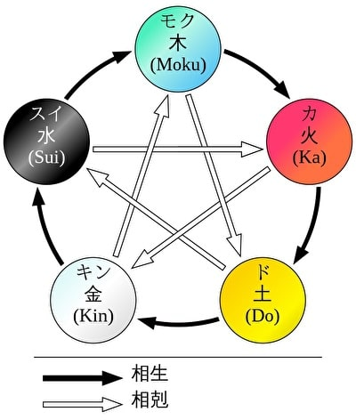

サガと陰陽五行説
ホーム > サガと陰陽五行説
中国の思想に「五行思想（ごぎょうしそう）」というものがあり、魔界塔士サガと関連するのでここに整理。五行説（ごぎょうせつ）ともいう。
五行思想とは、古代中国に端を発する自然哲学の思想。万物は火・水・木・金・土の5種類の元素からなるという説。肉眼で見える惑星（火星・水星・木星・金星・土星）を五行と対応させたものです。5種類の元素は「互いに影響を与え合い、その生滅盛衰によって天地万物が変化し、循環する」という考えが根底に存在する。

※画像はこちらから引用
五行説は陰陽説よりも後から出来たので、当初から陰陽説と一体であり、陰陽五行説といわれます。五行それぞれの意味合いは以下の通り。
| 五行 | 説明 |
|---|---|
| 木（もく） | 「春」の象徴。木の花や葉が幹の上を覆っている立木が元となっていて、樹木の成長・発育する様子を表す。 |
| 火（か） | 「夏」の象徴。光り煇く炎が元となっていて、火のような灼熱の性質を表す。 |
| 土（ど） | 季節の変わり目、「土用」の象徴。植物の芽が地中から発芽する様子が元となっていて、万物を育成・保護する性質を表す。 |
| 金（ごん/こん） | 「秋」の象徴。土中に光り煇く鉱物・金属が元となっていて、金属のように冷徹・堅固・確実な性質を表す。 |
| 水（すい） | 「冬」の象徴。泉から涌き出て流れる水が元となっていて、これを命の泉と考え、胎内と霊性を兼ね備える性質を表す。 |
五行にはそれぞれ対応する季節や方角、色、霊獣が存在します。方角の観点では、「五」は四方に中央を加えたものであるとされる。霊獣は五体います。四体は、青龍、朱雀、白虎、玄武で、四神と呼ばれます。残り一体は、瑞獣（ずいじゅう）の一体である麒麟（または黄竜）です。四神と麒麟（黄竜）を合わせて五神あるいは五獣と呼ばれます。瑞獣は瑞兆（ずいちょう、良い事が起こる前兆のこと）として姿を現すとされる、何らかの特異な特徴を持つ動物のことです。瑞獣の中にはこの世の動物達の長だと考えられた特別な4つの霊獣もいて、麒麟は4体の霊獣の一体でもあります。
ちょっとややこしくなってきたので、四神と瑞獣、及びその周辺を図で整理するとこうなります。

五行と五神の対応を整理すると以下の通りです。
| 要素 | 木 | 火 | 土 | 金 | 水 |
|---|---|---|---|---|---|
| 季節 | 春 | 夏 | 土用 （※） | 秋 | 冬 |
| 方角 | 東 | 南 | 中央 | 西 | 北 |
| 色 | 青 | 赤 | 黄 | 白 | 黒 |
| 霊獣 | 青龍 | 朱雀 | 黄龍 （麒麟） | 白虎 | 玄武 |
黄龍（麒麟）は四神の中心的存在、または、四神の長とも呼ばれています。四神が東西南北の守護獣なのに対し、中央を守るとされる。五行説で黄は土行であり、土行に割り当てられた方角は中央です。同様に四神は春夏秋冬を表すものでもあり、黄龍はそれぞれの土用を表すとされている。黄竜は皇帝の権威を象徴する竜とされたが、後に麒麟と置き換えられたり、同一視されるようになった。
四神の青龍、朱雀、白虎、玄武は魔界塔士サガのボスですね。アシュラが生み出したとされています。
一方、黄竜はこうりゅうという名で真の塔で通常モンスターとして登場します。麒麟はきりんで味方のみが変身できる最高レベルのモンスターとして登場します。陰陽五行説が取り入れられていることがわかりますね。中心的存在である黄龍と同一視される麒麟が味方限定モンスターというのもなんだか面白いところです。「アシュラでも生み出すことができなかった」ということなのでしょうか？
余談ですが、魔界塔士サガ以外のサガシリーズにおいても、陰陽五行説はよく出てくる概念です。
まずはサガ2秘宝伝説。こちらでもモンスターとして五神が登場します。亀系の最高レベルモンスターとしてげんぶ、虎はびゃっこ、鳥はすざく、ドラゴンはせいりゅう、キメラ系できりんが登場します。秘宝伝説では全員味方モンスターとしてのみ登場します。
次はロマサガ3。術の体系が蒼龍、朱鳥、白虎、玄武と太陽、月となっています。青龍は蒼龍、朱雀は朱鳥とも呼ばれるため、四神＋陰（月）陽（太陽）で陰陽五行説にのっとっています。
また、黄竜はロマサガ3で黄竜剣という技で登場します。
ロマサガ3の黄龍剣
河津さんは以下のツイートで「四魔貴族の四属性を五行で迎え撃つという構造になってます。」とおっしゃっていることから、意図的にこういう構成になっていることがわかります。
土属性。ロマサガではアディリス。黒い龍として描かれてます。ミンサガでは、よりアースワームっぽい姿に変わりました。五行だと土徳の色は黄。黄龍は中国清朝のシンボルですが、ロマサガ３では黄龍剣として最強技の一つになってます。四魔貴族の四属性を五行で迎え撃つという構造になってます。
— 河津秋敏 (@SaGa30kawazu) April 26, 2014
ロマサガ3のヴァッサール好きなフォロワーさんが五行の観点で聖王関係を整理していてなかなか興味深いです。
#ミンサガRS #ヴァッサール語り
— hibiki (@Hibiki_202011) December 8, 2022
→
この「水（ヴァッサール）」→「木（合化）」→「火（聖王）」の組み合わせは、聖王にとっては「五行相生」の嬉しい循環となり、ヴァッサールが聖王に奉仕する形となります。
（続↓ pic.twitter.com/PJXpoFksiK
次はサガフロ。サガフロでは五行は出てきませんが、空術の資質を持つ麒麟というキャラクターが存在します。以下はサガフロの麒麟の画像。
アンサガは術の体系が火行術、土行術、金行術、水行術、木行術と禁呪です。五行＋禁呪という形になっていることがわかります。
最後にサガスカ。サガスカはアンサガと同様に、土行術、金行術、水行術、木行術の５つの術があり、五行がそのまま術の体系になっていることがわかります。さらにサガスカにおいては、北東界外という場所でこの五行になぞらえた場所があります（下図参照）。
陰陽五行説はサガシリーズで結構頻繁に出てくる概念だということがわかりますね。
おまけ。サガシリーズではないけど、FFⅥの幻獣キリン。
関連するモンスター（後でリンクなおす）
参考
- wikipedia 五行思想
- wikipedia 陰陽五行思想
- 陰陽五行説（特に五行説について）
- 青龍、朱雀、白虎、玄武、そして麒麟！中国由来の霊獣5選【しゃれこうべが語る元ネタの世界 第40回】
- wikipedia 陰陽
- wikipedia 黄竜
- ピクシブ百科事典 黄竜
- ピクシブ百科事典 麒麟
- wikipedia 四霊
- wikipedia 七曜
- wikipedia 四神
- wikipedia 麒麟
- wikipedia 応竜
- wikipedia 鳳凰
- wikipedia 瑞獣
- wikipedia 獬豸
- wikipedia 瑞兆
- wikipedia 中国の竜
- UNLIMITED:SaGa Wiki 全術一覧
- UNLIMITED:SaGa Wiki 術について
- アニヲタWiki(仮) 術(アンリミテッド・サガ)